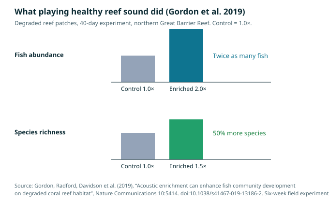

An honest status report from WAVE / bioacoustics.cloud

Illustration: a healthy reef at dusk, with a hydrophone listening on the seabed. Generated illustration, not a photograph.
A healthy coral reef is one of the loudest places in the ocean. That sentence surprises most people, because the popular image of a reef is a silent, postcard-coloured garden. Put a hydrophone — an underwater microphone — down on a living reef and the postcard dissolves into noise: the ceaseless crackle of snapping shrimp, like fat frying in a pan, layered with the grunts, whoops, croaks and drumbeats of fish, the scrape of sea urchins, and the crunch of parrotfish biting coral. It is a busy, crowded, competitive soundscape, and it is not decoration. For the young fish and coral larvae drifting in the open ocean looking for a home, that noise is a beacon. It says: life is here, food is here, shelter is here.
A dying reef, by contrast, goes quiet. When corals bleach and die, the fish leave, the shrimp thin out, and the soundscape collapses. And that silence is not just a symptom. It is part of the problem. If the young animals that could rebuild a reef cannot hear it, they do not come — and a quiet reef gets quieter, in a feedback loop that can lock degradation in place.
This article is about that loop, and about the startling experiment that tried to break it: playing recordings of healthy reefs through underwater loudspeakers on degraded patches of reef, and watching what happened. The results, published in peer-reviewed journals, are genuinely encouraging. They are also narrower, smaller in scale, and more conditional than the headlines suggest. Both halves of that sentence matter, and this article will keep them together.
What is true, and what is not yet true
Before going further, the honest framing that governs everything WAVE publishes. The live species predictor on bioacoustics.cloud is BirdNET — a model built by Cornell and Chemnitz that identifies birds first, covering 11,000+ species. The production model v2.4 (March 2025) covers 6,522 bird species; the 11,000+ figure is BirdNET's current platform figure. It does not classify reef sounds, and it does not identify fish, shrimp, or coral larvae. The broader GPU model (Perch / NatureLM) that the site's roadmap mentions is not connected. Marine-mammal classification on the site is cross-reference only, against the Watkins Marine Mammal Sound Database — not direct classification. The site's "MIT-licensed engine on GitHub" roadmap claim is not yet true; the public repository is a stub. Nothing in this article changes any of that, and nothing here should be read as claiming that WAVE can currently diagnose a reef from a recording. What WAVE can do today is analysis and structured access to sound and to the public archives that hold it — and what this article does is explain the science accurately, so that readers, reef managers, and future builders know what is real, what is promising, and what is still missing.
The reef science itself is real. The experiments described below were carried out by researchers at the University of Exeter, the University of Bristol, James Cook University, the Australian Institute of Marine Science, and the Woods Hole Oceanographic Institution, among others, and published in Nature Communications, Proceedings of the National Academy of Sciences, and Royal Society Open Science. The numbers in this article come from those papers and from the institutions that report on them. Where a number comes from press coverage rather than the paper itself, that is stated.
The sound of a living reef
To understand why reef sound matters, it helps to start with who is making it, and why. A coral reef is not a single habitat but a dense city of animals that use sound for the same reasons animals use sound everywhere: to find mates, defend territory, warn of danger, and coordinate. Many reef fish produce sound by vibrating their swim bladders, a gas-filled organ that works like a drum, or by grinding teeth and stridulating body parts. Damselfish — the small, feisty, abundant fish that dominate many reefs — produce pops, chirps and grunts during territorial disputes and courtship. Other species drum, hum, and thump in choruses that rise and fall with the time of day, often peaking at dawn and dusk, the same crepuscular rush hour that fills a forest with birdsong.
The loudest voice on the reef, however, belongs to an animal most visitors never notice: the snapping shrimp. A snapping shrimp has one oversized claw that snaps shut so fast it creates a cavitation bubble — a tiny pocket of vapour in the water that collapses with a sharp crack. Thousands of shrimp snapping at once produce the reef's characteristic background crackle, a sound so pervasive that it can interfere with sonar equipment. The shrimp are not singing for each other in any romantic sense; the snap is a hunting and defence weapon, a shock wave that can stun small prey. But the aggregate effect is a continuous, high-frequency texture that, to a listening larva, is as distinctive as a skyline.
Then there are the grazers and the builders: sea urchins scraping algae from rock, parrotfish crunching coral, the low-frequency rumble of larger fish moving through the water column. Put together, a healthy reef produces a soundscape with two qualities that turn out to be crucial. First, it is loud — measurably louder than a degraded reef or the open ocean. Second, it is complex: many different sound types, in many frequency bands, overlapping in time, with patterns that repeat daily and seasonally. Loudness says "something is here." Complexity says "many different things are here, and the system is working."
That distinction matters because the audience for reef sound is not human. It is the planktonic larvae — the tiny, drifting young of fish and corals — that must choose where to settle. A reef fish larva spends its first weeks adrift in the open ocean, then must find a reef, settle onto it, and metamorphose into a juvenile. It is a high-stakes choice made by an animal a few millimetres long, in a dark, three-dimensional world, with predators everywhere. Sound is one of the few cues that travels far enough to help: light fades with depth and distance, chemical cues disperse and dilute, but low-frequency sound can carry for kilometres underwater. Experiments have shown that larval fish can hear reef sound and swim towards it, and that they prefer the sound of a healthy reef to the sound of a degraded one — or to no reef sound at all.
Coral larvae, which also drift before settling, face the same problem. A coral polyp that settles on a dead, algae-smothered surface is unlikely to survive; one that settles on a living reef, among the right neighbours, has a chance. Recent work suggests coral larvae, too, respond to sound, though the mechanisms are less well understood than in fish — coral larvae have no ears, and researchers are still working out exactly how they sense vibration. The evidence, as we will see, comes from experiments rather than from a settled theory, and that is worth keeping in mind: the effect is documented before the mechanism is fully explained.
When a reef goes quiet
The modern history of coral reefs is, in large part, a history of sound loss. Climate change is driving mass bleaching events, in which heat-stressed corals expel the symbiotic algae that feed them and turn white; if the heat persists, they die. Overfishing removes the grazers that keep algae in check. Pollution, sedimentation, and coastal development smother and stress the system. The visible result is a reef that loses its colour and its three-dimensional structure. The audible result, measured for the first time with matched before-and-after recordings, is a reef that loses its voice.
The key study here is by Timothy Gordon and colleagues, published in the Proceedings of the National Academy of Sciences in 2018. The team had something rare in ecology: recordings of the same reef sites on Australia's Great Barrier Reef, made before and after severe degradation from bleaching and cyclones, matched in space and time. Comparing the two sets, they found that post-degradation reef sounds were on average 15 decibels quieter than their pre-degradation equivalents, and had significantly reduced acoustic complexity, acoustic richness, and rates of invertebrate snaps. Fifteen decibels is a large drop — the decibel scale is logarithmic, so a 15 dB reduction means the sound carries far less energy than before.
But the team did not stop at measuring the sound. They played the before-and-after recordings to wild fish larvae in two kinds of experiments — light-trap experiments, in which larvae are caught after being attracted to a trap playing a given soundscape, and patch-reef experiments, in which settlement onto small experimental reefs was measured. The results were stark. Post-degradation soundscapes were 8% less attractive to pre-settlement larvae and resulted in 40% less settlement of juvenile fishes than pre-degradation soundscapes. Post-degradation soundscapes, the authors found, were no more attractive to young fish than open-ocean sound — the acoustic equivalent of nothing at all. And the reductions were qualitatively similar across trophic guilds and taxonomic groups: it was not one picky species that stopped coming, but the whole community.
Read that again, because it reframes what reef degradation means. A degraded reef does not merely offer worse food and shelter to the animals that arrive. It fails to summon them in the first place. The larvae that would have become the next generation of reef fish swim past, or settle elsewhere, or die in the open water. Recovery becomes harder not only because the habitat is damaged, but because the damaged habitat has lost its voice — and with it, its ability to recruit the animals that would rebuild it. Gordon and colleagues put the implication plainly in their paper: reductions in fish settlement caused by acoustic changes may threaten the recovery potential of degraded coral reefs.
This is the feedback loop at the heart of this article. Degradation quiets the reef; a quiet reef recruits fewer fish; fewer fish means less grazing, less nutrient cycling, less of the ecological work that keeps a reef alive; the reef degrades further, and gets quieter still. Breaking that loop requires either restoring the habitat until it sounds healthy again — slow, expensive, and dependent on fixing the underlying stressors — or intervening in the loop directly, by giving the reef its voice back.
The loudspeaker experiment
That is what Gordon and his colleagues tried next. In a study published in Nature Communications in 2019, the team worked on coral-rubble patch reefs on Australia's northern Great Barrier Reef during the natural fish recruitment season of November–December 2017. They set up three treatments: patches with underwater loudspeakers playing recordings of healthy reef sound, patches with loudspeakers that were present but silent, and patches with no loudspeaker at all. The playback ran for 40 days, across the six-week experiment, and the team repeatedly surveyed the juvenile fish — particularly damselfish, chosen because they are abundant, non-cryptic, and easy to survey accurately — that settled on each patch.
The results, in the paper's own summary, were that acoustic enrichment enhanced fish community development across all major trophic guilds, with a doubling in overall abundance and 50% greater species richness. After 40 days, there were twice as many juvenile damselfish on acoustically enriched reefs as on either kind of control reef, with no significant difference between the two control treatments — which matters, because it shows the effect came from the sound, not from the presence of a loudspeaker as a physical object. The enriched reefs attracted damselfish faster in the early stages and maintained higher abundance throughout the 40 days. And the effect was not limited to one family or feeding style: enrichment enhanced fish community development within an important reef fish family, across a range of specific trophic guilds, and at the level of the whole community.

Chart: results of Gordon et al. (2019) after 40 days of playback on degraded reef patches, northern Great Barrier Reef. Control = 1.0×. Source: Gordon et al., Nature Communications 10:5414, doi:10.1038/s41467-019-13186-2.
"Healthy coral reefs are remarkably noisy places — the crackle of snapping shrimp and the whoops and grunts of fish combine to form a dazzling biological soundscape. Juvenile fish home in on these sounds when they're looking for a place to settle," said senior author Professor Steve Simpson of the University of Exeter, when the study was published. Lead author Tim Gordon added: "Boosting fish populations in this way could help to kick-start natural recovery processes, counteracting the damage we're seeing on many coral reefs around the world." The word "kick-start" is doing careful work there. The claim is not that speakers restore a reef. It is that sound can restart the recruitment process that degradation had stalled — and that, once fish return, their grazing, their waste, and their presence as prey and predators can help the reef's natural recovery processes resume.
It is worth pausing on the scale of the experiment, because scale is where enthusiasm and evidence most often part company. These were small patch reefs — experimental plots, not whole reef systems — studied for 40 days during one recruitment season. The loudspeakers played recordings of healthy reef sound; they did not create a healthy reef. The fish that arrived were juveniles settling for the first time, not adult populations. Whether those fish stayed after the speakers were switched off, whether they survived to adulthood, and whether the effect scales up from a patch to a reef to a reef system, were not answered by this study. The authors are clear that acoustic enrichment "shows promise as a novel tool for the active management of degraded coral reefs" — promise, not proof of a cure. That is the right register, and this article stays in it.
Do coral larvae listen too?
Fish are not the only settlers a reef needs. The coral animals themselves must also recruit: coral larvae, released in spawning events, drift, and then settle onto a surface and build a new colony. Without coral recruitment, there is no reef to recover, however many fish arrive. So the natural next question — and the one researchers at the Woods Hole Oceanographic Institution (WHOI) took up — was whether coral larvae also respond to sound.
The answer, published in Royal Society Open Science in 2024 by Nadège Aoki and colleagues, is yes, at least for the species tested. The team worked at three reef sites off the southern shore of St. John in the U.S. Virgin Islands: Tektite Reef, which was relatively healthy, and two severely degraded sites, Cocoloba and Salt Pond. They placed underwater speakers at the degraded sites, played recordings of fish calls and pistol shrimp snaps captured from the healthy reef, and compared coral larval settlement rates between locations with and without acoustic playback. The study species was the mustard hill coral, Porites astreoides, a brooding coral common in the Caribbean.
Settlement was, on average, approximately 1.7 times higher at acoustically enriched sites than at controls, with even larger differences at some sites — coverage of the study reported settlement rates up to seven times higher at peak sites. As with the fish experiment, the effect was demonstrated in a controlled field setting, on a small spatial scale, over a limited period, for one species. It is not a demonstration that playing sound will regrow a reef. It is a demonstration that the acoustic cue matters to coral larvae as well as to fish larvae — which strengthens the case that the reef's soundscape is a functional part of its ecology, not a by-product of it, and that losing the soundscape is a real ecological loss with measurable consequences for recruitment.
That finding also sharpens the scientific puzzle. Fish larvae have ears and a lateral line system; they can hear in the conventional sense. Coral larvae have neither. How a millimetre-scale larva without ears detects and responds to sound is not settled — hypotheses involve sensing particle motion, the back-and-forth vibration of water particles that accompanies a sound wave, rather than pressure changes. The mechanism matters for practical reasons: if larvae respond to particle motion, then the design of a playback system — speaker type, placement, frequency content — must produce the right kind of motion at the right place, not merely the right sound pressure level. It is a reminder that "playing reef sounds" is not one intervention but a family of engineering choices, and that the field is still learning which choices matter.
What a reef sounds like, as a diagnostic
There is a second, quieter application of reef acoustics that may matter as much as enrichment: listening as measurement. If a healthy reef and a degraded reef sound different — and Gordon's matched recordings show that they do, by 15 decibels and a large margin of complexity — then a hydrophone can function as a health sensor. A reef that is losing its fish and shrimp will show it in its soundscape before a diver with a clipboard necessarily notices, and a reef that is recovering will show that too.
This is where bioacoustics meets its most practical promise. Traditional reef monitoring is labour-intensive: divers, transects, visual counts, limited by weather, depth, time, and budget. A hydrophone can listen continuously, day and night, in bad weather, at a fraction of the cost per hour of observation, and it records things divers cannot see — the nocturnal choruses, the cryptic species, the activity patterns across seasons. The idea of acoustic indices — single numbers that summarise the complexity, richness, or loudness of a soundscape — has been developed for exactly this purpose: to turn hours of underwater recording into a trend line a manager can act on.
The approach is still young, and it has honest limits. A soundscape is not a species list. Two reefs can sound similar for different reasons, and a loud reef is not automatically a healthy one — a reef dominated by a single noisy species, or flooded with the sound of boats and construction, can be loud and unhealthy at once. Anthropogenic noise — shipping, pile-driving, seismic surveys — is itself a stressor that can mask biological sound and disturb marine life. Any acoustic health metric must separate the biological signal from the human noise, and must be calibrated against ground-truth ecological data from the same place. Researchers are working on that calibration now, including early experiments with machine-learning models trained on reef audio to distinguish healthy from degraded reefs. Those models are research tools, not deployed products, and their accuracy on new reefs, in new regions, with different species mixes, is still being tested. WAVE's own position is consistent with that: analysis and structured access first, claims second.
The limits, stated plainly
Acoustic enrichment is an exciting result. It is not a solution to coral reef decline, and anyone who presents it as one is either misunderstanding the science or selling something. The limits are not footnotes; they are the frame.
First, sound cannot fix the causes of reef degradation. A speaker cannot reverse ocean warming, cannot stop a bleaching event, cannot clean polluted water, and cannot remove the algae smothering a dead reef. If fish are attracted to a habitat that cannot support them — too hot, too sedimented, too stripped of shelter — then enrichment could in principle do harm, drawing larvae to a place where they will die. Researchers have raised exactly this concern: enrichment must be paired with habitat that is actually suitable, or with restoration work that makes it suitable. Sound is a recruitment tool, not a habitat.
Second, the experiments so far are small and short. Patch reefs, 40 days, one recruitment season, a handful of species. We do not yet know whether the fish that settle on enriched patches stay once the speakers stop, whether they survive at higher rates, whether the effect persists across years, or whether it works at the scale of a whole reef system rather than a plot. We do not know the optimal playback: which recordings, at what volume, for how long, at what time of year. We do not know the long-term effects of adding artificial sound to a marine environment — whether it disturbs other species, masks other cues, or creates dependencies. These are research questions, not reasons to dismiss the approach, but they are reasons not to oversell it.
Third, there is the question of what "healthy reef sound" means as a recording. The playback in the Gordon experiment used recordings of healthy reefs. But reefs differ — by region, by depth, by season, by species mix. A recording from one reef may not be the right cue for another. And as reefs change under climate pressure, the sound of a "healthy" reef may itself be a moving target. The archive matters here: the public sound archives — Xeno-canto, the Macaulay Library, the Watkins Marine Mammal Sound Database — preserve recordings that may become baselines for what a place used to sound like. That is a different kind of value from species identification, and it is one WAVE takes seriously: analysis and structured access, not resale of public recordings, which belong to the commons.
Finally, there is cost and logistics. Underwater loudspeakers need power, maintenance, anchoring, and protection from storms, biofouling, and theft. Scaling from experimental patches to reef-scale deployment is an engineering and funding problem, not just a scientific one. The 2026 project in Jamaica, documented by PBS NewsHour, which uses underwater speakers — described in coverage as "underwater boomboxes" — to broadcast healthy reef sounds off the country's northern coast, is a test of exactly that scaling question. Its results are not yet in, and this article will not pre-empt them.
Where this goes next
The honest summary of reef acoustics in 2026 is this. We know that reefs have distinctive, information-rich soundscapes, and that those soundscapes change measurably when reefs degrade. We know that young fish use reef sound to choose where to settle, and that degraded soundscapes recruit far fewer of them. We know from controlled field experiments that playing healthy reef sound can double fish recruitment to degraded patches and increase coral larval settlement. We do not know whether those effects persist, scale, or translate into lasting reef recovery. We do not know the best way to deliver sound, or the full ecological consequences of doing so. And we do not have — anywhere — a deployed system that diagnoses reef health from sound alone, or a product that restores reefs with speakers.
What we have is a research programme with a clear direction: listen first, measure carefully, intervene modestly, and verify everything. The next steps are the unglamorous ones that science actually runs on. Longer experiments, across more seasons and more species. Follow-up studies that track whether enriched patches keep their fish after the speakers stop. Calibration of acoustic health metrics against ecological ground truth, reef by reef. Better playback engineering, including understanding particle motion. And open data — recordings, code, and protocols shared so that results can be checked and built on, rather than announced and forgotten.
That is also, in miniature, the WAVE programme. Bioacoustics.cloud exists to make animal sound searchable, analysable, and connected to the public archives that hold it — Xeno-canto, the Macaulay Library, Watkins, iNaturalist, GBIF — with the live predictor honestly described as BirdNET, birds-first, 11,000+ species, and the rest of the roadmap labelled as roadmap, not reality. The reef is one of the places where that programme matters most, because the reef's sound is both its diagnostic and, possibly, part of its treatment. Listening will not save the reefs on its own. But a reef we cannot hear is a reef we cannot understand — and a reef we do not understand, we cannot save.
Glossary
- Acoustic enrichment: playing recordings of healthy habitat sound through loudspeakers to attract animals (here, fish and coral larvae) to a degraded site.
- Acoustic complexity / richness: measures of how varied and information-rich a soundscape is — how many different sound types, in how many frequency bands, over time.
- Cavitation bubble: a tiny vapour bubble created when a snapping shrimp's claw snaps shut; its collapse produces the shrimp's characteristic crack.
- Hydrophone: an underwater microphone; the basic instrument of marine bioacoustics.
- Larval settlement: the process by which a drifting larva attaches to a surface (a reef, a rock) and begins its juvenile life. For fish, settlement follows a pelagic larval stage in open water.
- Passive acoustic monitoring (PAM): recording sound without emitting it, typically with autonomous recorders left in place for weeks or months.
- Soundscape: the total acoustic environment of a place — biological, geophysical, and human sounds together.
- Swim bladder: a gas-filled organ in many fish that can be vibrated to produce sound, as well as controlling buoyancy.
- Trophic guild: a group of species that feed in a similar way (e.g. herbivores, planktivores, predators) — used to check whether an effect holds across feeding styles, not just one group.
Frequently asked questions
Can I hear a reef's health just by listening? Not reliably by ear alone, and not from a single recording. Trained listeners can tell a noisy reef from a quiet one, but turning that impression into a defensible health assessment requires calibrated recordings, comparison with known baselines, and ecological ground truth from the same site. That is what acoustic indices and machine-learning classifiers are being built to do — and they are still research tools.
Does playing reef sounds actually restore a reef? No — not by itself. In controlled experiments, playback doubled fish recruitment to small degraded patches over 40 days and increased coral larval settlement. That is recruitment, not restoration. Restoration also requires suitable habitat, tolerable water temperatures, and the removal of the stressors that caused the degradation.
Why do snapping shrimp matter so much? Because they are the reef's background chorus. Their snaps dominate the high-frequency band of the reef soundscape, and their abundance tracks the reef's structural complexity — shrimp live among coral branches, so when the branches die, the shrimp go. A reef that has lost its snap has lost much of its invertebrate life.
Is acoustic enrichment used anywhere at scale yet? Not as a routine management tool. It has been tested in field experiments in Australia and the U.S. Virgin Islands, and trial projects were underway in Jamaica in 2026. Any claim that it is already deployed at reef scale should be treated with scepticism.
What does WAVE actually do with reef sound today? On bioacoustics.cloud, the live predictor is BirdNET (birds-first, 11,000+ species). Reef sounds are not classified by the live model; marine sounds are cross-referenced against the public Watkins archive. WAVE's sellable piece is analysis and structured access to sound and archives — not reselling public recordings, and not a reef-diagnosis product that does not exist yet.
References
- Gordon, T. A. C., Radford, A. N., Davidson, I. K., Barnes, K., McCloskey, K., Nedelec, S. L., Meekan, M. G., McCormick, M. I., & Simpson, S. D. (2019). Acoustic enrichment can enhance fish community development on degraded coral reef habitat. Nature Communications 10, 5414. doi:10.1038/s41467-019-13186-2. Full text via PubMed Central: https://pmc.ncbi.nlm.nih.gov/articles/PMC6884498/
- Gordon, T. A. C., et al. (2018). Habitat degradation negatively affects auditory settlement behavior of coral reef fishes. Proceedings of the National Academy of Sciences 115, 5193–5198. doi:10.1073/pnas.1719291115. Summary: https://lausr.org/dashboard/?doi=10.1073/pnas.1719291115
- Aoki, N., Weiss, B., Jezequel, Y., Zhang, W., Gordon, T. A. C., Apprill, A., & Mooney, T. A. (2024). Soundscape enrichment increases larval settlement rates for the brooding coral Porites astreoides. Royal Society Open Science 11, 231514. doi:10.1098/rsos.231514. https://royalsocietypublishing.org/doi/10.1098/rsos.231514
- Sayigh, L., Daher, M. A., Allen, J., Gordon, H., Joyce, K., Stuhlmann, C., et al. (2016). The Watkins Marine Mammal Sound Database: An online, freely accessible resource. Proceedings of Meetings on Acoustics 27, 040013. Watkins database: https://cis.whoi.edu/science/B/whalesounds/index.cfm
- WAVE / bioacoustics.cloud — live site and honest status notes: https://bioacoustics.cloud/ ; local regen notes,
~/workspace/your_files/hostinger-email/sites/bioacoustics.cloud-regen/README-DEPLOY.md - Simpson, S. D., et al., via University of Exeter / ScienceDaily coverage of Gordon et al. (2019): https://scitechdaily.com/new-hope-for-coral-reef-restoration-from-playing-sounds-of-healthy-reefs-on-loudspeakers/
- Coral reef soundscape background: https://www.coraldigest.org/reef_ecology/soundscapeecology/index.html
- Jamaica acoustic enrichment trials (2026), via PBS NewsHour as reported: https://www.upworthy.com/scientists-hoped-to-revive-dead-reefs-by-putting-speakers-underwater-then-the-fish-showed-up/
- Xeno-canto — open archive of wildlife sounds: https://xeno-canto.org/
- Macaulay Library, Cornell Lab of Ornithology: https://www.macaulaylibrary.org/
- iNaturalist: https://www.inaturalist.org/ ; GBIF: https://www.gbif.org/
- WAVE agent project (separate from bioacoustics.cloud): https://wave.agifuturefoundation.org/
- AGI Future Foundation: https://agifuturefoundation.org/
Staging note: this article is staged locally for the WAVE bioacoustics programme. It has not been published, deployed, or shared. All generated images in this article are labelled illustrations, not photographs or real data.